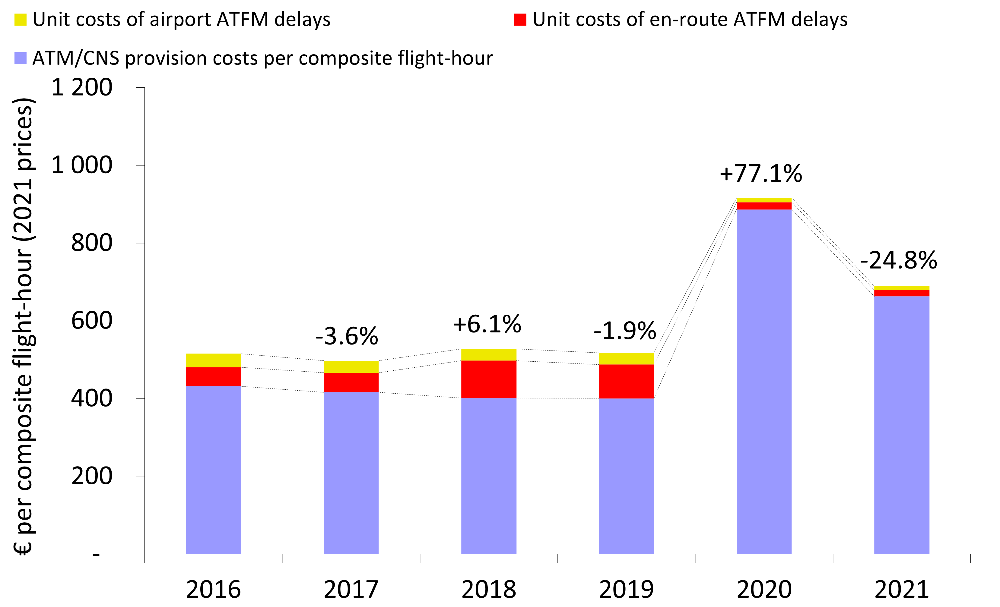
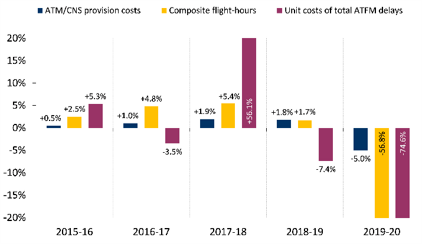

3 Economic cost-effectiveness
The concept of economic cost-effectiveness, developed by the PRC, is defined as the sum of gate-to-gate ATM/CNS provision costs and the costs of ground ATFM delays for both en‐route and airport, all expressed per composite flight-hour. This economic performance indicator is meant to capture trade‐offs between ATC capacity and costs1.
Figure 3.1 shows preliminary results on the changes in economic cost-effectiveness between 2016 and 2021 at Pan-European system level. Figure 3.1 (a) shows the changes in unit economic costs, while Figure 3.1 (b) provides complementary information on the year-on-year changes in ATM/CNS provision costs, composite flight-hours and unit costs of ATFM delays.


Figure 3.2 shows preliminary results at ANSP level (dotted lines represent the 1st and 3rd quartiles). On average, the share of ATFM delays in 2021 was some 4% (compared to 3% in 2020 and 22% in 2019), and only four ANSPs had ATFM delays representing 5% or more of their unit economic costs: HASP (32%), NAV Portugal (8%), DSNA (7%) and LVNL (5%)
See https://ansperformance.eu/economics/ace/ace-handbook/ for more information on the methodology used to compute composite flight-hours and economic costs.↩︎